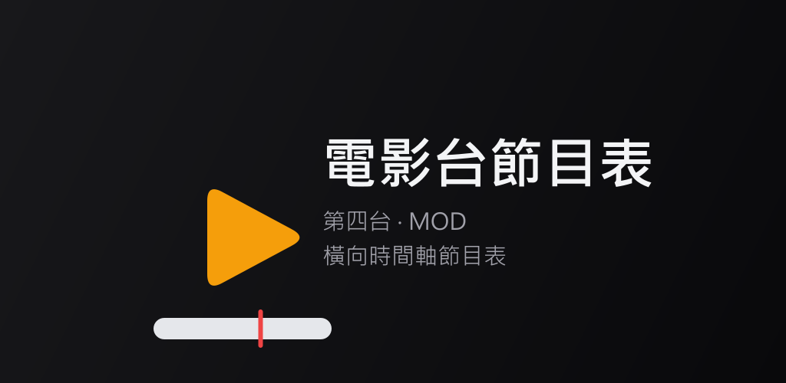
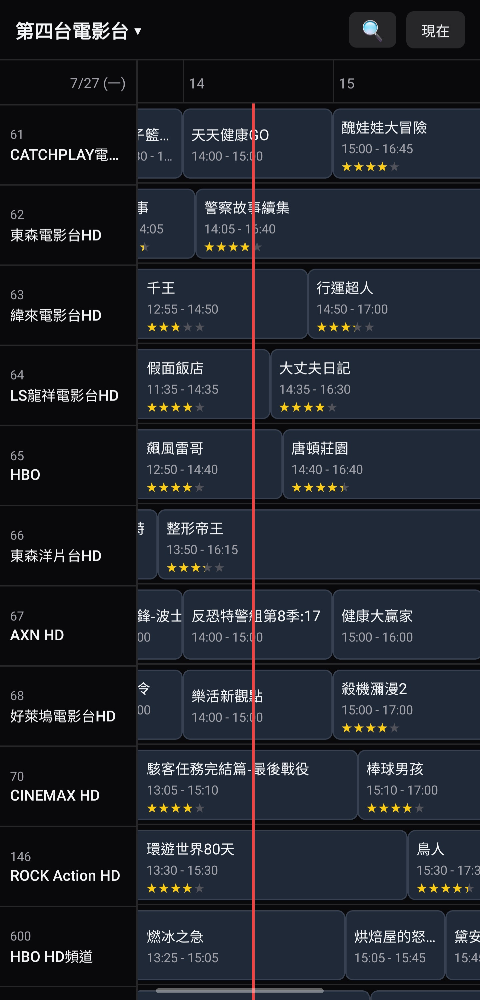
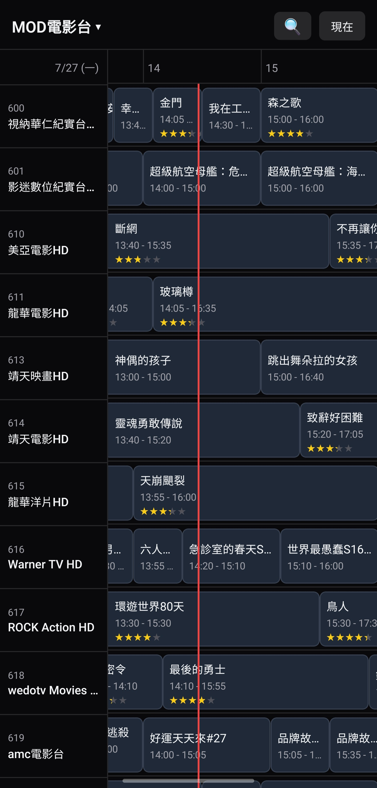
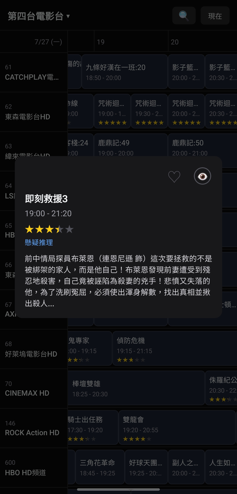
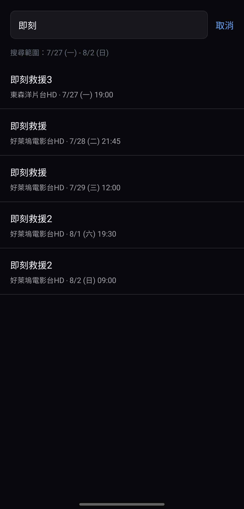

有線電視和 MOD 的電影台、戲劇台，全部放在同一條橫向時間軸上。往右滑就能看到未來一週播什麼，不用一台一台切換查詢。
在 Google Play 免費下載Android 適用 ・ 不用註冊 ・ 不收集個人資料





想找今晚有什麼電影或戲可以看，通常得一台一台切、或一個網頁一個網頁翻。這個 App 把頻道排在左邊、時間排在上面，同一個時段各台在播什麼一眼就能比較，找到想看的再決定看哪一台。
左右滑看未來 7 天，上下滑切換頻道，同時段各台節目一目了然。
有線電視電影台、有線電視戲劇台、MOD 電影台、MOD 戲劇台，上方一鍵切換。
輸入片名，直接跳到它在時間軸上的位置，也能看到還會重播的場次。
收藏想看的節目，開播前 10 分鐘用通知提醒你，不會錯過。
追劇時每一集分開記錄，知道自己看到第幾集。
長按節目，同一部劇所有播出時段一起標出來，方便找補播。
長按頻道名稱上下拖曳，排成你習慣的順序。
參考 TMDB 評分，選片更有依據。
免費，目前沒有廣告。
不需要。我的最愛、已看過、頻道排序都只存在你自己的手機裡，不會上傳。
資料每隔幾小時自動更新一次。臨時異動的節目可能會有時間差，實際播出時間請以電視台公告為準。
目前只有 Android 版。
頻道以常見的有線電視與 MOD 頻道為主，各地區實際收看的頻道與頻道號碼可能不同，請以你家的頻道表為準。
遇到問題、想要新功能，歡迎到 Google Play 商店頁留言，或來信：willsu.tw@gmail.com。